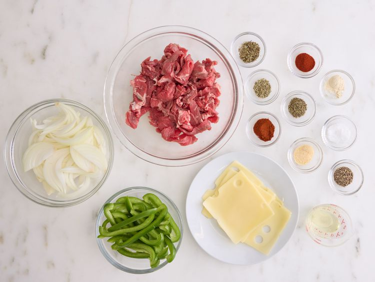
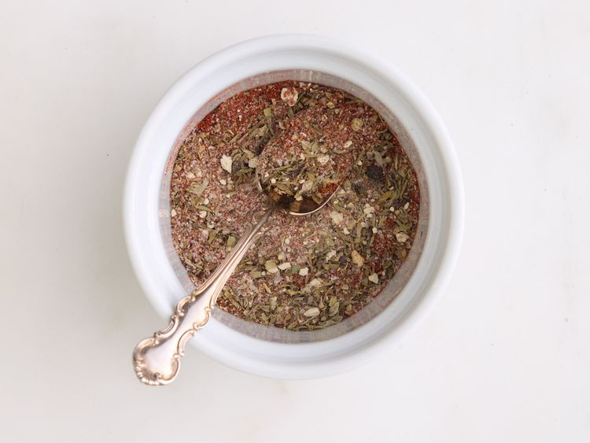
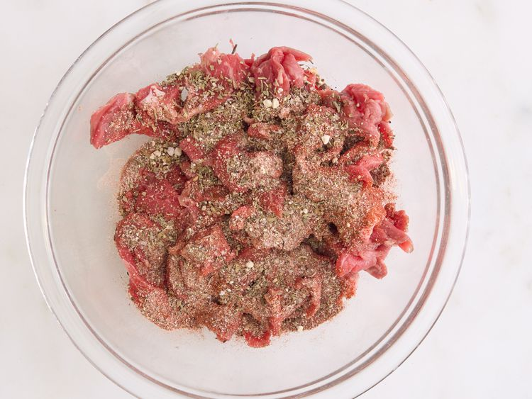
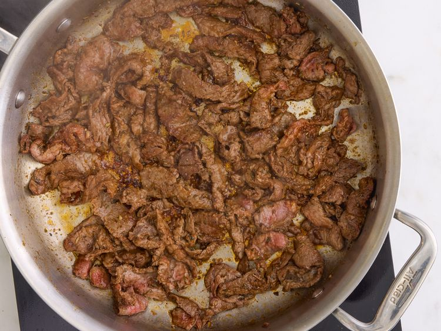
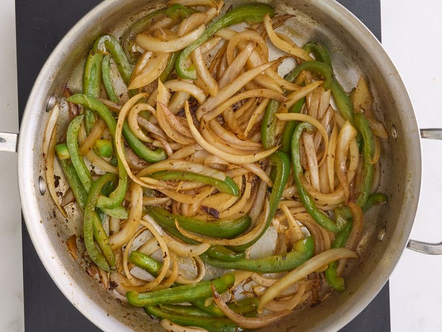
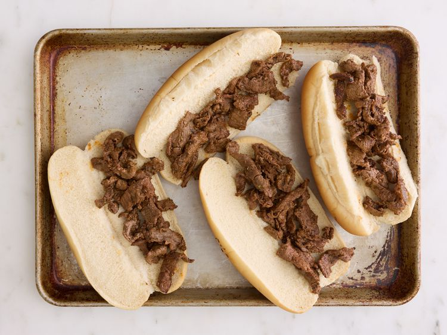
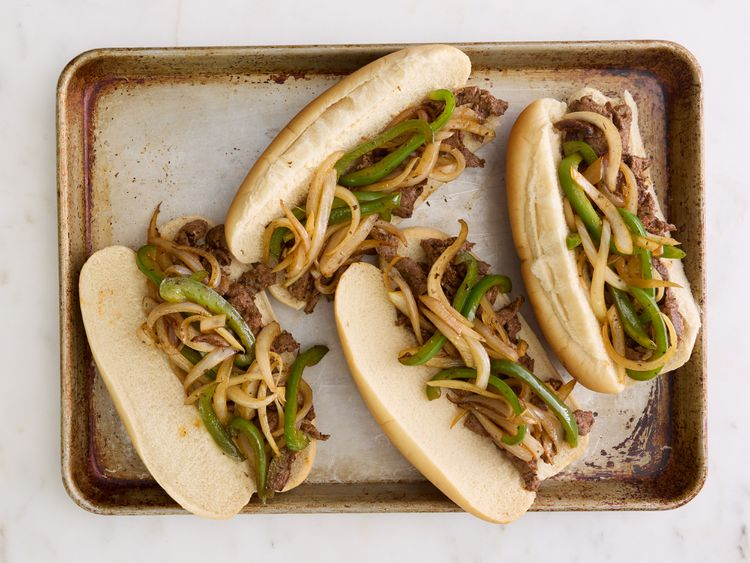
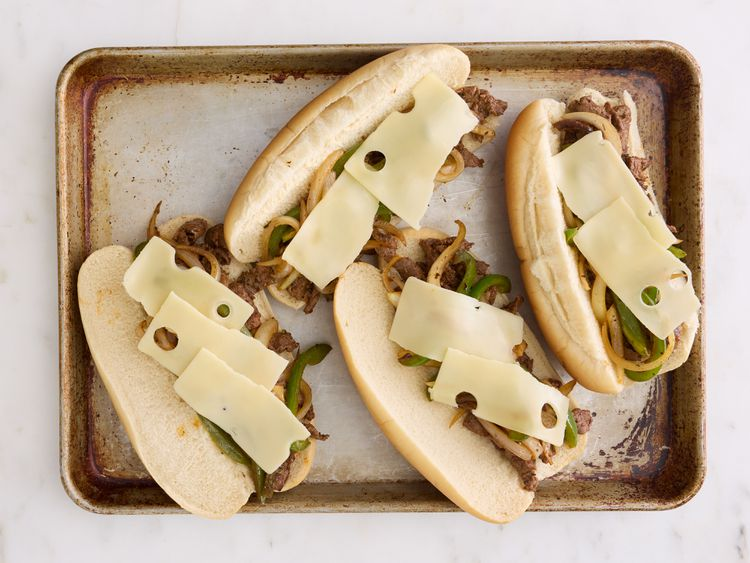
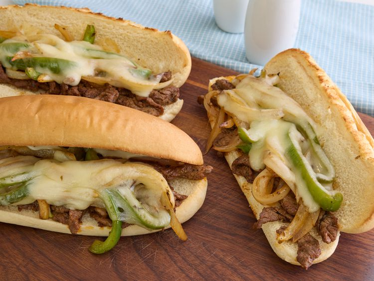

Home
Philly Cheesesteak
This Philly cheesesteak is made with sirloin sliced into strips and seasoned with a delicious blend of herbs and spices for a flavorsome sandwich. Sometimes I toast the hoagie roll before topping it with the steak, carmelized onions, peppers, and cheese
Ingredients
- 1/2 teaspoon salt
- 1/2 teaspoon black pepper
- 1/2 teaspoon paprika
- 1/2 teaspoon chili powder
- 1/2 teaspoon onion powder
- 1/2 teaspoon garlic powder
- 1/2 teaspoon dried thyme
- 1/2 teaspoon marjoram
- 1/2 teaspoon dried basil
- 1 pound beef sirloin, cut into thin 2 inch strips
- 3 tablespoons vegetable oil
- 1 onion, sliced
- 1 green bell pepper, julienned
- 3 ounces Swiss cheese, thin sliced
- 4 hoagie rolls, split lengthwise
Directions
- Gather all ingredients

- Mix salt, pepper, paprika, chili powder, onion powder, garlic powder, thyme, marjoram, and basil together in a small bowl

- Place steak in a large bowl; sprinkle seasoning mixture over top and stir to coat.

- Heat 1/2 of the oil in a skillet over medium-high heat. Add steak; cook and stir to the desired doneness. Transfer cooked steak to a plate

- Heat the remaining oil in the skillet. Add onion and green pepper; cook and stir until tender and caramelized

- Preheat the oven on the broiler setting. Divide cooked beef between the bottoms of 4 rolls.

- Layer with onion and green pepper

- Top with sliced cheese. Place on a cookie sheet.

- Broil in the preheated oven until cheese is melted

- Cover with tops and serve
